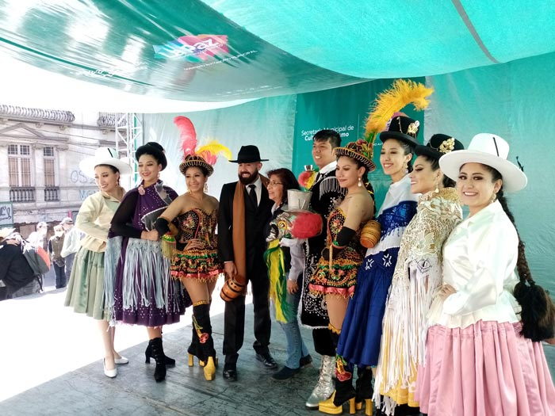
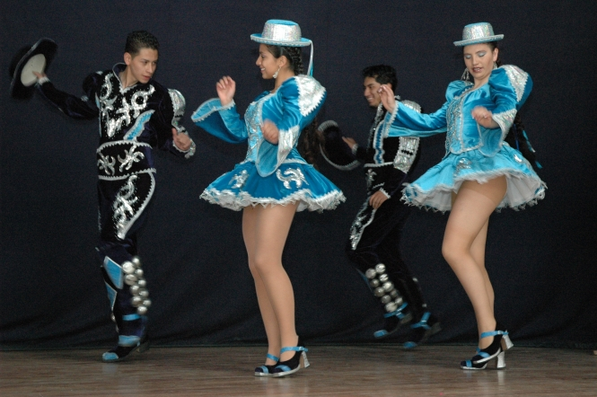
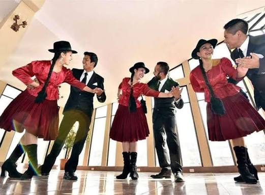
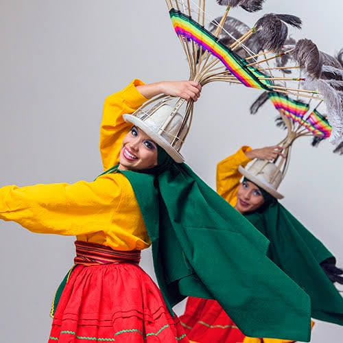

Formación Artística de Excelencia
Fundado bajo el Departamento de Cultura de la UCB, nuestra compañía reúne a estudiantes y bailarines dedicados al estudio profundo de la danza.
"La danza es el lenguaje oculto del alma."
Universidad Católica Boliviana "San Pablo" | La Paz - Bolivia
Fundado bajo el Departamento de Cultura de la UCB, nuestra compañía reúne a estudiantes y bailarines dedicados al estudio profundo de la danza.
"La danza es el lenguaje oculto del alma."

Carrusel JS vanilla heredado de web04.

Fusión académica con trajes artesanales.

Elegancia y galanteo tradicional neoclásico.

Recorrido por los valles y el altiplano.